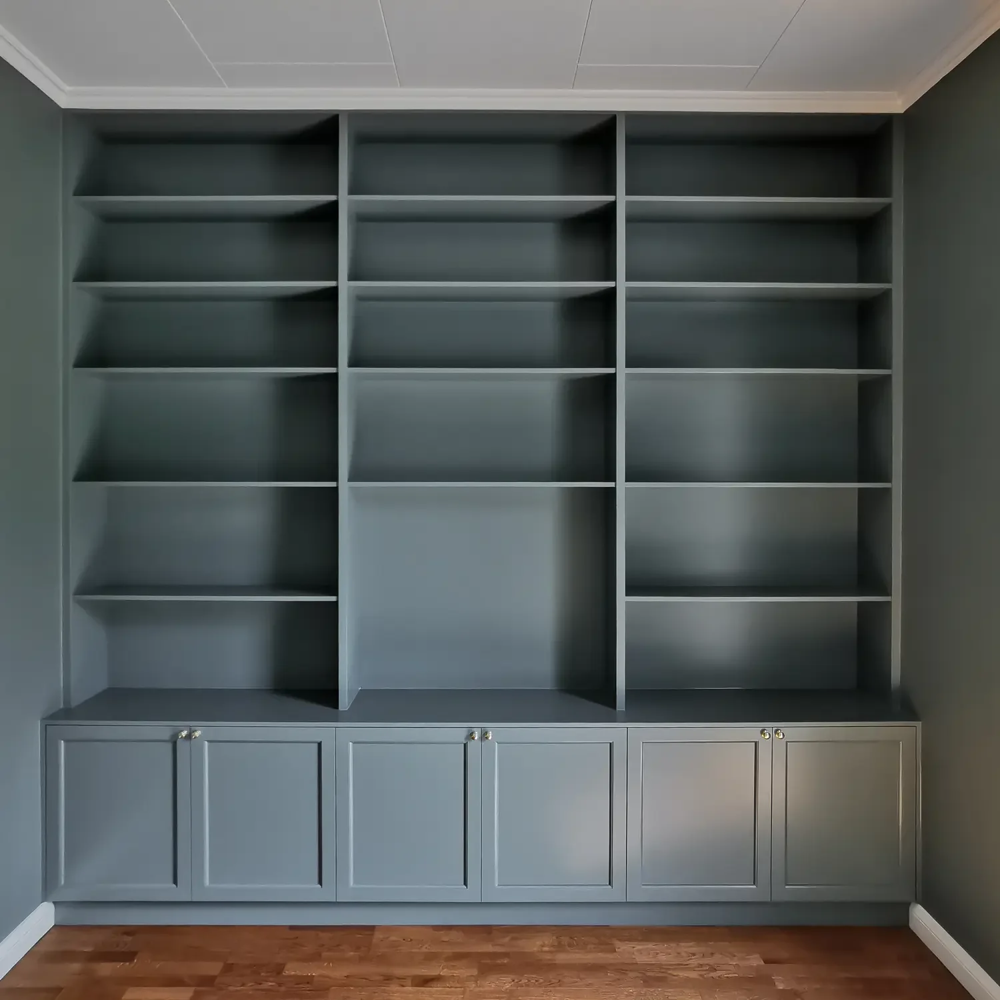

Bokhyllor med plats
för ditt liv.
För böckerna du återkommer till och föremålen du tycker om. Vi formger bokhyllor som blir en del av rummet.

En möbel som hör till huset.
En platsbyggd bokhylla kan följa väggens mått och rummets linjer. Öppna hyllor och stängd förvaring får mötas i en lösning som utgår från vad du vill ha framme och vad du vill lägga undan.
Vi börjar hemma hos dig. Du visar platsen och berättar hur du vill använda den. Sedan tar vi fram ett förslag med skisser, material, kulör och pris.
Utformad tillsammans med dig.
Våra möbelsnickare har utbildning inom både möbelsnickeri och möbeldesign. Vi hjälper dig att hitta en utformning som passar din smak, från ett ljust bokskåp till ett mörkare bibliotek.
Bokhyllan tillverkas i vårt snickeri i Skogås. Vi transporterar den till dig, monterar och justerar på plats.
Börja med ett hembesök.
Designritningar och offert är kostnadsfria. Du betalar ingenting i förskott.
Några detaljer från våra arbeten.